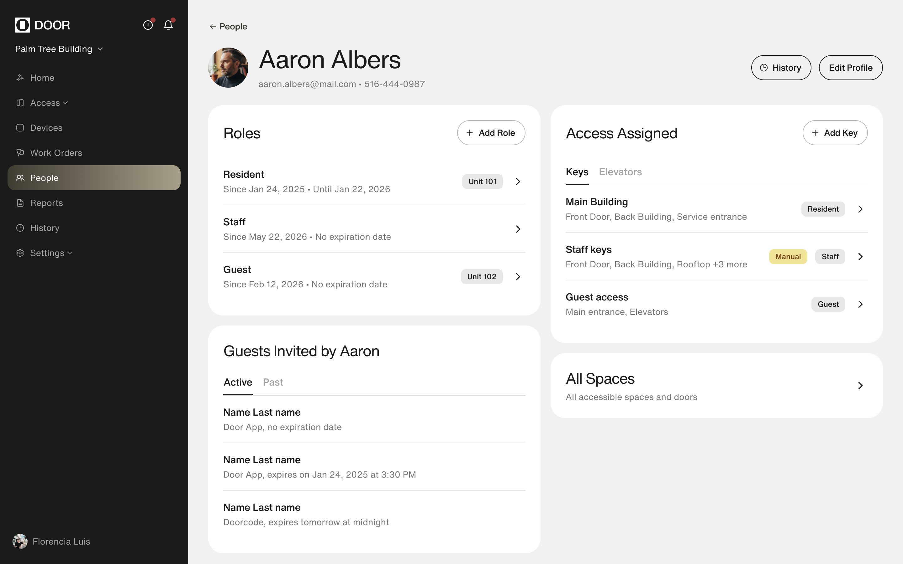
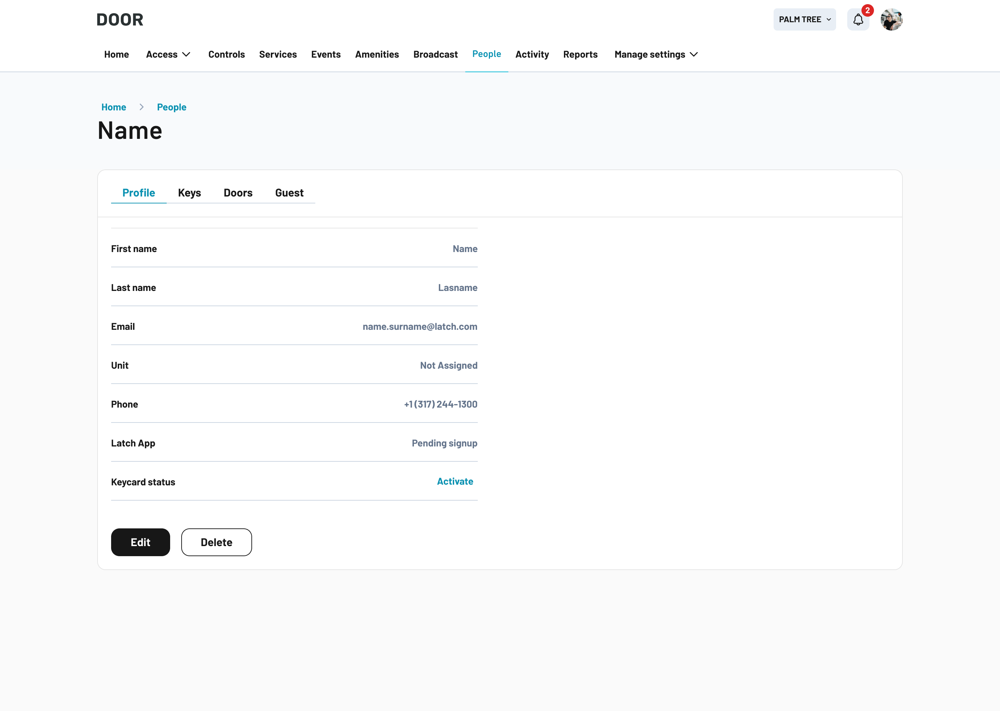
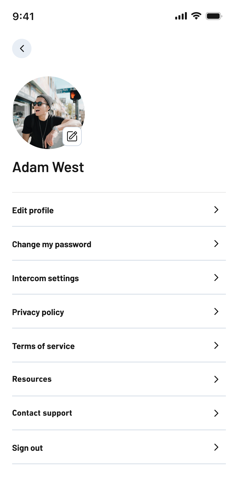
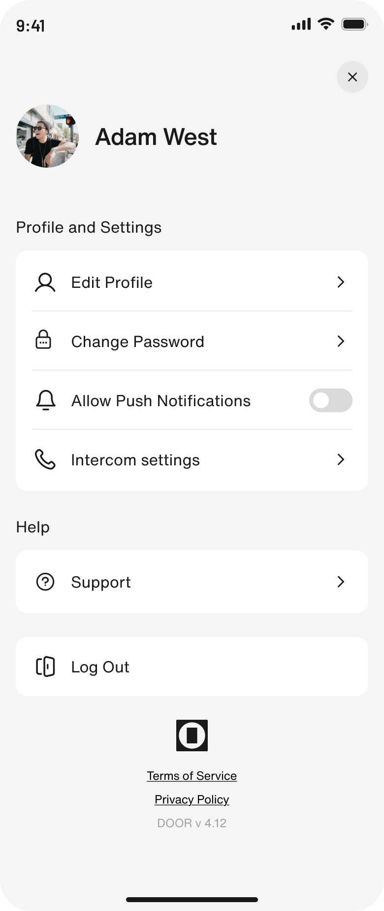

A full redesign of DOOR, app and web, in two months.Un rediseño completo de DOOR, app y web, en dos meses.
One of five designers on the redesign of DOOR.Una de cinco diseñadoras en el rediseño de DOOR.

Turning a new visual identity into a better product experience.Convertir una nueva identidad visual en una mejor experiencia de producto.
Fast growth had left the SaaS and the resident app looking like two different products: different typography, different visual rules, and components that had drifted apart over time.El crecimiento rápido había dejado al SaaS y a la app de residentes como dos productos distintos: tipografías diferentes, reglas visuales diferentes y componentes que se habían ido separando con el tiempo.
A branding agency came in to set the foundation. Internally there were too many competing opinions about what DOOR should look like, and an outside perspective was what got everyone behind one direction.Una agencia de branding entró a sentar las bases. Internamente había demasiadas opiniones enfrentadas sobre cómo debía verse DOOR, y una mirada externa fue lo que alineó a todos detrás de una dirección.
Most rebrands end with a brand book in a deck and a product that never changes. We used the momentum to rebuild the experience underneath the new identity.La mayoría de los rebrandings terminan en un brand book dentro de una presentación y un producto que nunca cambia. Usamos el impulso para reconstruir la experiencia debajo de la nueva identidad.


Two redesigns in two months, never a big bang.Dos rediseños en dos meses, nunca un big bang.
The work was split into phases that could each ship on their own, so engineering and the business never had to wait for each other.El trabajo se dividió en fases que podían salir por separado, para que ingeniería y el negocio nunca tuvieran que esperarse.
SkinSkin
New tokens, type scale, iconography and component styling across DOOR OS and both mobile apps. No layout changes and no new logic, which is what kept it to four weeks and one engineering cycle.Nuevos tokens, escala tipográfica, iconografía y estilos de componentes en DOOR OS y en las dos apps mobile. Sin cambios de layout ni lógica nueva, que es lo que permitió hacerlo en cuatro semanas y un ciclo de ingeniería.
Deep redesignRediseño profundo
With the tokens and component library signed off, all three products went into UX redesign at the same time, five designers working against one system. Handoff went flow by flow, in roadmap order, so engineering never got a two-hundred-screen drop.Con los tokens y la librería de componentes aprobados, los tres productos entraron en rediseño de UX al mismo tiempo, con cinco diseñadores trabajando sobre un mismo sistema. El hand-off fue flujo por flujo, en el orden del roadmap, para que ingeniería nunca recibiera doscientas pantallas de golpe.
IntelligenceInteligencia
The visual layer is settled, but the sections still behave like separate products inside one app. The current work is getting the product to surface what needs attention, so a manager is not checking eleven places to find it.La capa visual ya está resuelta, pero las secciones todavía se comportan como productos separados dentro de una misma app. El trabajo actual es lograr que el producto muestre lo que necesita atención, para que un manager no tenga que revisar once lugares para encontrarlo.
Micro journey map — resident unlocking a doorMicro journey map — un residente abriendo una puerta
Each flow was mapped before it was redesigned: what the person does at every step, what fails there, and what we could fix. Every leg of the resident and manager journey went through this.Cada flujo se mapeó antes de rediseñarlo: qué hace la persona en cada paso, qué falla ahí y qué podíamos resolver. Cada tramo del journey de residentes y managers pasó por esto.
Designed screensPantallas diseñadas


What I ownedDe qué me encargué
OutcomeResultado
Phasing kept engineering moving, but phase 1 shipped screens we already knew were structurally wrong. For about six weeks the product looked new and behaved old, and some of that feedback was fair. Next time I would push to restructure one main flow alongside the skin, so the direction is visible in production from the start.Fasear mantuvo a ingeniería en movimiento, pero la fase 1 sacó pantallas que ya sabíamos que estaban mal estructuradas. Durante unas seis semanas el producto se veía nuevo y se comportaba viejo, y parte de ese feedback fue justo. La próxima vez impulsaría reestructurar un flujo principal junto con el skin, para que la dirección se vea en producción desde el arranque.